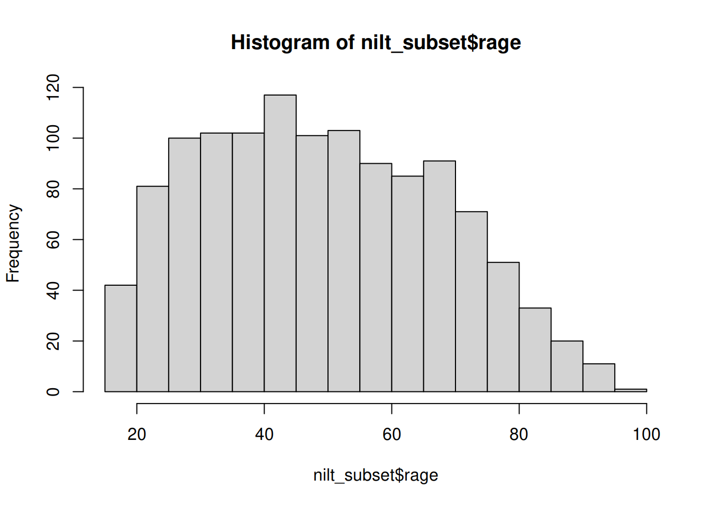

Lab 4 Exploratory data analysis
In our previous session we learned about wrangling data in R by implementing useful function such as filter(), select(), and mutate(). In this session we will focus on descriptive statistics. This includes the exploration and description of quantitative data.
4.1 Getting started
We will continue working on the same project and dataset that you created in the last lab on R Studio Cloud. Please follow the next steps:
- Go to your ‘Quants lab group’ in RStudio Cloud.
- Open the project called ‘NILT’ located in your lab group’.
- Continue working at the bottom of the ‘Exploratory analysis’ script that you created in the last lab.
- Load
niltdataset that you created in the last session using the following code:
# Load the data from the .rds file we created in the last lab
nilt <- readRDS("data/nilt_r_object.rds")- Create a subset of the
niltdata keeping only few variables using theselect()function as shown below:
4.2 Exploratory analysis
4.2.1 Data overview
Are your summary statistics hiding something interesting?
Figure 4.1: Exploratory analysis.
To start exploring our data it essential to distinguish the adequate tools and measures available for the type of data in question. As you know now, there are two broad types: (1) categorical and (2) numeric.
There are several ways in which we can summarise our data. Today, we will use a useful package called vtable. Install it in your session running the following line from your console:
Once it is installed, make sure to load it with the next line. This time copy and paste it in your R script, so you can run it every time you restart your session.
4.2.2 Categorical data
A usual way to explore the categorical data is using contingency and proportion tables. The contingency tables include the count for each category while the proportion tables contain the count divided by the total number of observations.
Try to focus on the interpretation of the outputs in the following section. At this time, it is just optional to run the code shown.
Let’s say we are interested in the data’s break down by respondents’ sex (called rsex in the dataset). We will use function sumtable() of the vtable package to produce a contingency table for a single variable (known as One-Way contingency table).
| Variable | N | Percent |
|---|---|---|
| rsex | 1204 | |
| … Male | 537 | 45% |
| … Female | 667 | 55% |
From the result, we see that there are more female respondents than males.
Specifically, we see that males respondents represent 44.6% of the total sample, whereas females 55.4%.
We can do this with any type of categorical variable. Let’s see how the sample is split by religion (religcat). So, we will add it to in the vars argument.
| Variable | N | Percent |
|---|---|---|
| rsex | 1204 | |
| … Male | 537 | 45% |
| … Female | 667 | 55% |
| religcat | 1168 | |
| … Catholic | 491 | 42% |
| … Protestant | 497 | 43% |
| … No religion | 180 | 15% |
As you can see, about the same number of people are identified as being catholic or protestant, and a relatively small number with no religion.
What if we want to know the religious affiliation break-down by males and females. This is where Two-Way contingency tables are useful and very common in quantitative research. To produce it, we have to specify the group argument in the sumtable function as following:
| Variable | N | Percent | N | Percent |
|---|---|---|---|---|
| religcat | 520 | 648 | ||
| … Catholic | 209 | 40% | 282 | 44% |
| … Protestant | 211 | 41% | 286 | 44% |
| … No religion | 100 | 19% | 80 | 12% |
There are some interesting results from this table. You can see that there are proportionally more female respondents who are either Catholic or Protestant than males, namely 43.5% vs 40.2% and 44.1% vs 40.6%, respectively. We also see that there are almost 20% of male respondents who do not self-identify with a religion which contrast to the 12% of female participants.
4.2.3 Activity 1
From your R Studio Cloud script, do the following activities using the data in the nilt_subset object (feel free to copy and adapt the code shown above):
- Create a One-Way contingency table for
uninatidin thenilt_subsetdataset using thesumtable()function; - Using the variables
religcatanduninatid, generate a Two-Way contingency table; - Are your summary statistics hiding something interesting? Discuss your results with your neighbour or your tutor.
4.2.4 Continuous (numeric) data
In the previous section we’ve learnt how to summarise categorical data. But very often we want to work with continuous numeric variables or a combination of both. To summarise and understand numeric data there are two main types: measures of centrality and measures of spread.
As before, try to focus on the interpretation of the outputs in the following section. At this time, it is just optional to run the code shown.
4.2.4.1 Measures of centrality
In quantitative research, we usually have access to many observations in a sample which contains different attributes for each of them. It would be difficult (and probably not very useful) to talk about each of the NILT respondents one by one. Instead, to describe this sample we need measures that roughly represent all participants.
This is actually an important step in quantitative research, since it allows us to characterise the people that we are studying. For example, in the previous section we only talked about the respondents’ sex and political affiliation, but who are the people we are talking about? Probably a place to start digging deeper is to know their age. The first tool that we will use to understand numeric values is a histogram. Let’s see how the age of NILT respondents is distributed.

This plot show us on the X axis (horizontal) the age and the frequency on the Y axis. We can see that the youngest age in the sample is somewhere close to 20, and the oldest is almost 100. We also observe that the total number of observations (represented by the frequency on the vertical axis) for extreme values (close to 20 on the left-hand side and 100 on the right-hand side), tends to be lower than the values in the centre of the plot (somewhere between 30 and 45). For instance, we can see that there are approximately 120 respondents who are around 40 years old, that seems to be the most popular/frequent age in our sample. Now, we can represent these central values with actual measures, typically mean or median.
The median is the mid-point value in a numeric series. If you sort the values and split it by half, the value right in the middle is the median. Luckily there is a function ready to be used called… You guessed it - median().
## [1] 48The median age is 48, that means that 50% (or half) of the respondents are equal or younger than this, and the other 50% is equal or older.5
To compute the mean manually, we need to sum all our values and divide it by the total number of the observations as follows:
\[ mean =\frac{ x_1 + x_2 + x_3 ...+x_n } {n} \]
The formula above is for you to know that this measure considers the magnitude of all values included in the numeric series. Therefore, the average is sensitive to extreme numbers (e.g. a very very old person). To compute the mean you need the mean() function.
## [1] 49.61532As you can see, the above measures try to approximate values that fall somewhere in the centre of the histogram plot, and represent all observations in the sample. They tell different things and are sometimes more (or less) suitable in a specific situation.
4.2.4.2 Measures of spread
By contrast, there are measures that helps us to describe how far away a series of numeric values are from the centre. The common measures of spread are quartiles, variance and standard deviation.
The quartiles are very useful to quickly see how numeric data is distributed. Imagine that we sort all ages in the sample and split it in four equal parts. The first quartile includes the lowest 25% values, the second the other 25%, the third other other 25%, and the fourth the highest 25%. To compute quartiles we can use the quantile function.
## 0% 25% 50% 75% 100%
## 18 35 48 64 97In our sample, the youngest quarter of the respondents is between 18 and 35 years old. The second quarter is between 35 and 48 years old. The next quartile is between 48 and 64. The oldest 25% of the respondents is between 64 and 97.
The variance is useful to obtain a singe measure of spread (instead of four values, as the above) taking the mean as a reference. This is given by the following formula:
\[ var = \frac{ \sum(x - \bar{x})^2 }{n-1 } \]
To decipher the formula above, the \(\bar{x}\) represents the mean, the \(x\) represents each of the values in the numeric series. The formula takes each of the \(x\) values and subtract it from the mean \(\bar{x}\). Later, it squares the result of the subtraction (that is multiply it by itself). This is done to obtain a positive value, since some numbers in the series will be lower than the mean (resulting in negative values). Then, we sum all of them and divide the sum by the size/length of the numeric sequence \(n\) minus 1. To estimate the variance in R we only need the var() function.
## [1] 343.3486As you can see, the result is not very intuitive. That is because we squared the subtraction. Luckily, there is a measure that put it in readable scale. This is the standard deviation. In essence this takes the square root of the variance (the reversed operation of squaring it): \[sd=\sqrt{var}\]
To compute it in R, use the sd() function.
## [1] 18.52967This measure is more human readable than the variance. Don’t worry too much about the formula. An important thing to remember is what the measure represents. An informal definition of the standard deviation is the average distance from the mean. In essence, it tell us how far the values in our data are from the mean.
4.2.5 Putting it all together
Phew, that was a lot!…
… Luckily we can use the sumtable function to compute all these measures at the same time!
It is very simple. You can compute a quick summary for age as following:
| Variable | N | Mean | Std. Dev. | Min | Pctl. 25 | Pctl. 75 | Max |
|---|---|---|---|---|---|---|---|
| rage | 1201 | 50 | 19 | 18 | 35 | 64 | 97 |
The result displays the number of observations used (N), the mean, the standard deviation, minimum, the 1st (same as ‘Pctl. 25’) and 3rd quartile (same as ‘Pctl. 75’), as well as the maximum (i.e., eldest respondent).
4.2.5.1 Categorical and numeric data
Lastly, there will be times in which you will need to compute a summary combining categorical and numeric data, to compare groups for example. The good news is that we can use exactly the same function and syntax to do this. Let’s take the following example to compute the summary of the respondent’s age (rage) by gender:
| Variable | N | Mean | SD | N | Mean | SD |
|---|---|---|---|---|---|---|
| rage | 535 | 51 | 18 | 666 | 49 | 19 |
In the code above, we are simple specifying the variable rage and grouping the summary by rsex. This produces a small summary included the number of observations in each category an the main measure of centrality and spread, namely the mean and the std. dev.
4.2.6 Activity 2
Can money buy happiness?
Using the data in the nilt_subset dataset, complete the following activities. This will be a good practice run for doing the research report when you run your own analysis on the NILT teaching dataset. Handy!
- Using the
hist()function plot a histogram of personal incomepersinc2. From the NILT documentation this variable refers to annual personal income in £ before taxes and other deductions (use the$symbol after the name of the dataset and then the name of the variable inside the function); - Create a summary of the personal income
persinc2variable, using thesumtable()function; - Finally, compute the mean and standard deviation of the personal income
persinc2, grouped by happinessruhappy. What do you observe? - Discuss the results with your neighbour or your tutor.
Note that the argument
na.rmequalTRUEis used in the function. The ‘na’ bit refers to missing values, and the ‘rm’ refers to remove. So we are telling R to remove the missing values when computing the median. This is because we do not know the age of 3 of the respondents in the sample.↩︎